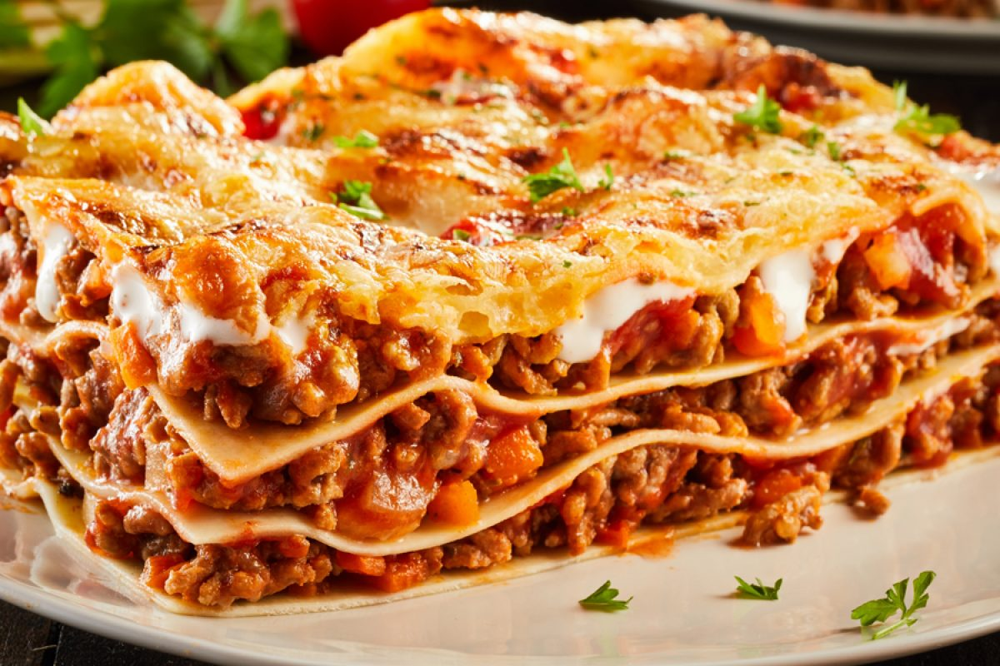

LASAGNA

INGREDIENTES
- 2 Pimientos rojos
- 2 zanahorias
- 2 dientes de ajo
- 150 g. de bacon o panceta
- 2 cebollas grandes
- 250 g. de tomate natural
- 250 ml de vino blanco
- 100 ml de aceite de oliva virgen extra
- 1 cucharada de óregano
- sal y pimienta negra recién molida
- 12 láminas de lasaña
Bechamel
- 125 g. de mantequilla
- 1 litro de leche entera
- Una pizca de nuez moscada
- Gratinar
PASOS
- Calentamos una cazuela grande de agua, la más ancha de casa. Cuando empiece a hervir echamos 2 puñados
generosos de sal.
- Introducimos las láminas de lasaña una a una sin que se toquen (para que no se peguen entre ellas).
Ahora
podemos encontrar infinidad de tipos de lasaña donde no hace hidratarla como se hacía antes. En casa
muchas
veces para ahorrar tiempo empleo las que se hidratan con la bechamel y el jugo que suelta la salsa al
hornear.
- Si lo hacéis de la manera tradicional tenemos que remover con una cuchara de madera y en unos 10 minutos
sacamos las láminas. Las estiramos encima de unas hojas de papel absorbente de cocina. Aunque os parezca
que
no están, acabarán haciéndose en el horno.
- El siguiente paso será lavar muy bien todas las verduras que vamos a emplear en el relleno. En la receta
os
aconsejo el relleno de la clásica salsa boloñesa, zanahorias, ajo, pimientos y cebolla.
Relleno
- Las verduras las cortamos en trocitos pequeños para que se junten bien en la salsa. Las zanahorias
las
cortamos lo más fino posible. Os recomiendo laminarlas con el pelador de las patatas porque a la hora
de
pocharlas si las tiras son gruesas no se hacen. Reservamos todo en un bol.
- En otra cazuela echamos aceite de oliva virgen extra. Empezamos introduciendo pochando la cebolla y
el
ajo, cuando esté doradita, añadimos el resto de ingredientes.
- Sofreímos todo a temperatura media durante unos 15 minutos y esperamos por la carne. Salpimentamos
la
carne al gusto y la echamos a la cazuela con la verdura. Dejamos que se pase durante 5 minutos y
cuando
veamos que va cambiando de color introducimos el bacon o panceta en trozos muy pequeños. Vertemos un
vaso de vino blanco y esperamos a que reduzca (otros 5 minutos a fuego medio).
- Añadimos un vaso de tomate natural, echamos la cucharadita de orégano y rectificamos de sal y
pimienta
si hiciese falta (probad la salsa para ver si está a vuestro gusto). Removemos la carne con las
verduras
y retiramos del fuego, dejamos enfriar un poco.
- Precalentamos el horno a 200º C durante 15 minutos, lo justo para hacer el resto de la lasaña.
Bechamel
- Mientras reposa la salsa vamos a preparar la bechamel, la podemos preparar más cremosa o más
consistente
dependiendo de las medidas. En el blog tenéis la receta de esta crema con todo lujo de detalles.
- Para montar la lasaña la cosa es muy sencilla. Ponemos en el fondo de la fuente unas cucharadas de
la
bechamel. Encima las láminas, una capa de la mezcla con la carne en cada lámina, otra vez la bechamel
y
así hasta tener 3 pisos. Se pueden hacer las capas de lasaña que quieras, bueno las que te permita
la
fuente. Finalmente rematamos con una capa generosa de bechamel. Y para aquellos que le guste el
queso,
rallamos aquel que más os guste, que sea especial para gratinar. Os recomiendo un queso curadito
tipo
parmesano.
- Horneamos en la bandeja del medio durante 15 minutos a 180º C y durante 3-5 minutos en la parte
superior
con el gratinador puesto para que se dore. Lista para comer, no hace falta reposo, del horno a la mesa.
- Esta receta además de ser económica es una receta saludable, llena de proteínas e hidratos. Yo la
presento siempre como plato único, espero que os guste.
Volver a la página Principal